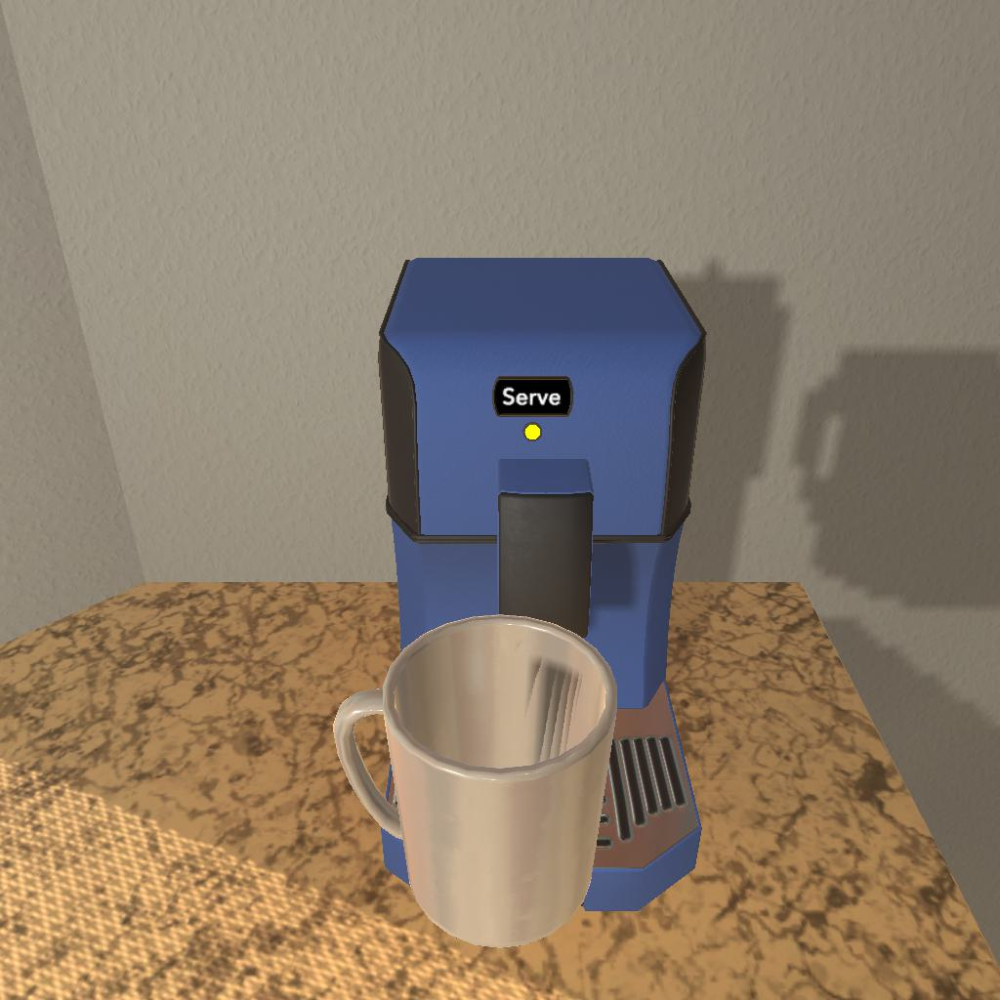

---------------------------------------------------------task: 23---------------------------------------------------------
--------------------------------------------------------------------------------------------------------------------------------------------------------------------
--------------------------------------------------------------------------------------------------------------------------------------------------------------------
Step:--------------------------------------------------------------------------6-------------------------------------------------------------------------------
----------------------------------------
VLM Prompt:
Image1:
Image2:
Image3:
**Instruction**
1. Analyze the provided images to identify all visible household objects and compare the difference between images (e.h. whether the object is opened or not and taken on hand or not), focusing on those relevant to the task description "put a hot mug in coffeemachine."
2. Use the analysis of images and the task hint "The agent must find an object of the desired type, pick it up, go to a microwave, heat the object with the microwave, then find the correct location to place it, and put it down there. The agent does not need to use the microwave button or open the microwave to heat the object, and the agent just needs to do action that is "heat the object with the microwave"." to answer the question: what is the most reasonable action in the choices for the task description "put a hot mug in coffeemachine"?
3. Decide and write the answer using the template: The answer is: (i): , where i is the real number. If there is no desired object in images, search every place based on **Initial Observation** to find the object. And if no one is exactly correct, choose a similar answer.
**Initial Observation**
You are in the middle of a room. Looking quickly around you, you can see cabinet (1-15), fridge (1), countertop (1-4), drawer (1-4), microwave (1), toaster (1), coffeemachine (1), garbagecan (1), sink (1), stoveburner (1-3), sinkbasin (1)
**Answer Choices**
(1): go to cabinet 1
(2): go to cabinet 2
(3): go to cabinet 3
(4): go to fridge 1
(5): go to countertop 1
(6): go to cabinet 5
(7): go to cabinet 6
(8): go to cabinet 7
(9): go to drawer 1
(10): go to drawer 2
(11): go to cabinet 8
(12): go to drawer 3
(13): go to cabinet 9
(14): go to cabinet 10
(15): go to drawer 4
(16): go to microwave 1
(17): go to cabinet 11
(18): go to toaster 1
(19): go to cabinet 12
(20): go to cabinet 13
(21): go to cabinet 14
(22): go to cabinet 15
(23): go to countertop 2
(24): go to garbagecan 1
(25): go to countertop 3
(26): go to countertop 4
(27): go to sink 1
(28): go to stoveburner 1
(29): go to stoveburner 2
(30): go to stoveburner 3
(31): go to sinkbasin 1
(32): put mug 1 in/on coffeemachine 1
(33): examine mug 1
(34): examine coffeemachine 1
**Answer**
Let's think step by step by following the instructions.
----------------------------------------
----------------------------------------
Original Response:
Image Analysis:
- Image1 shows a countertop with a pepper mill and a lettuce head.
- Image2 depicts a coffee machine with a mug placed under the dispenser, and the "Serve" button is lit, indicating that the coffee machine is in use.
- Image3 shows the same coffee machine, but the mug is now removed from under the dispenser and placed on the countertop.
Task Analysis:
The task description "put a hot mug in coffeemachine" involves heating a mug and then placing it in the coffee machine. According to the task hint, the agent does not need to use the microwave button or open the microwave to heat the object; they just need to perform the action "heat the object with the microwave."
From the initial observation, we know that the microwave is available in the room. Since the images provided do not show the microwave, the agent must find it first.
Based on the analysis and task description, the most reasonable action from the choices would be to go to the microwave to heat the mug, which is not currently hot in any of the images provided. After heating the mug, the agent would then put the hot mug in the coffee machine.
The answer is: (16): go to microwave 1
----------------------------------------
----------------------------------------
>>> Refine Original VLM Response and Get Pure Action: go to microwave 1
----------------------------------------
-----------------------------------------------------------------
Running time: 16.410747528076172 seconds
Total Money: 14.475939999999998
-----------------------------------------------------------------
-----------------------------------------------------------------
Text Observation:You arrive at loc 16. The microwave 1 is closed.
-----------------------------------------------------------------
UNSUCCEED